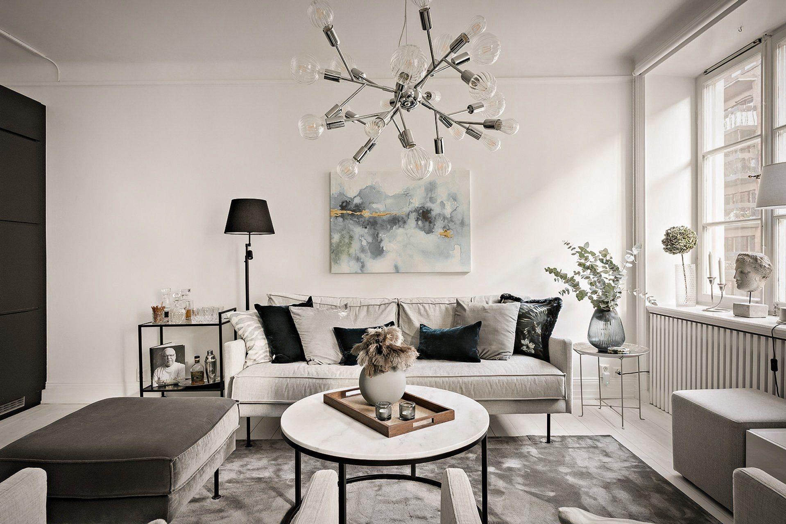
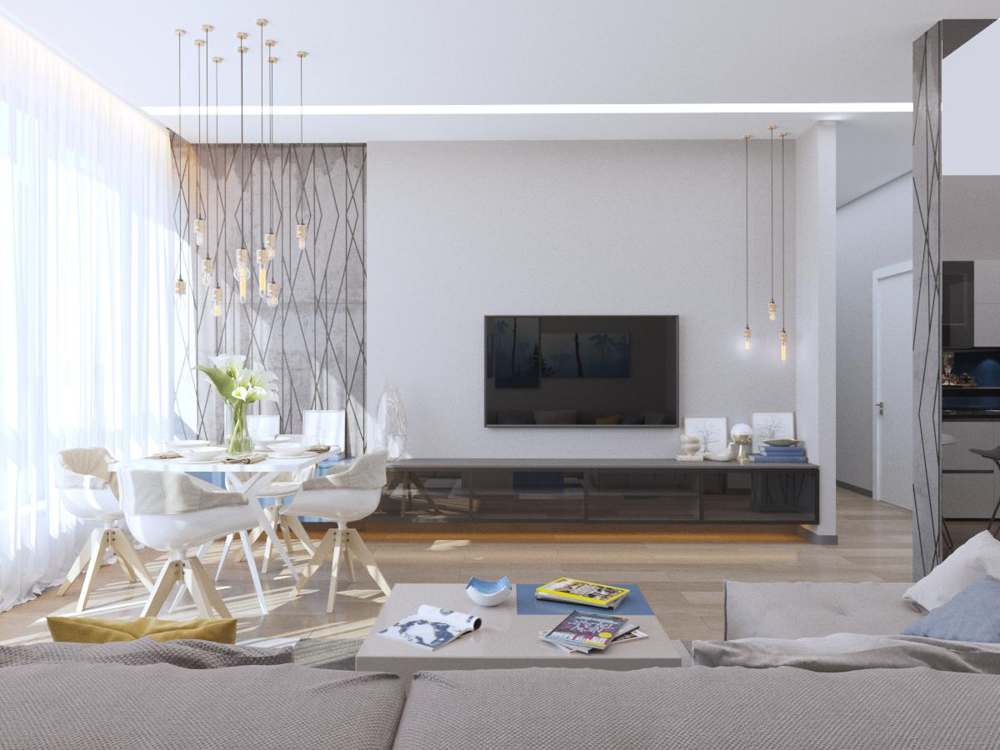

Магазин My Home был создан с любовью к минимализму и эстетике.
Наша главная цель - привнести кусочек чего-то особенного в каждый дом.
Ученые сделали невероятное открытие и показали способность элементов дизайна
интерьера вызывать у людей положительный или отрицательный эмоциональный отклик.
Так, например, присутствие природных элементов в интерьере уменьшает стресс, помогает улучшить
настроение и концентрацию. Достаточно легко разбавить любой интерьер интересными декорациями, чтобы изменить
всю атмосферу или даже стиль.


К сожалению сейчас сайт выполняет только ознакомительную функцию и online-заказы не доступны.
Вы также можете ознакомится с нашими товарами или заказать их в Instagram.
Приятных покупок!